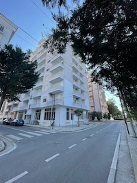
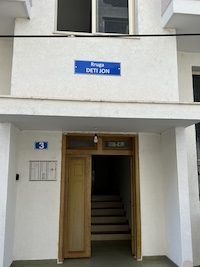
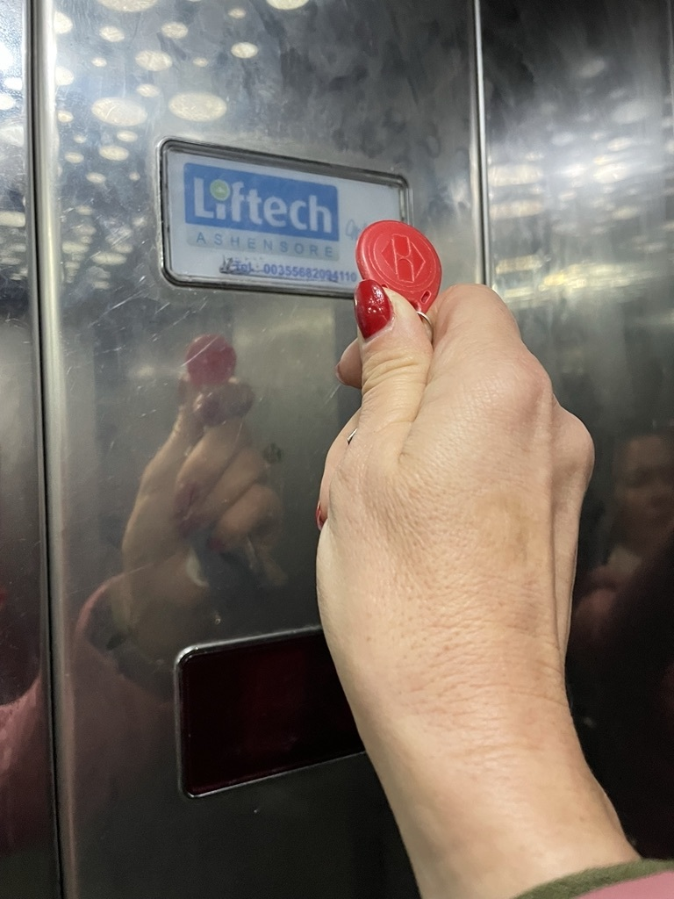
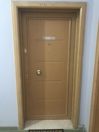
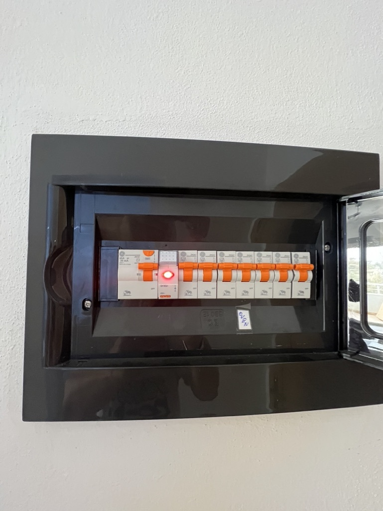
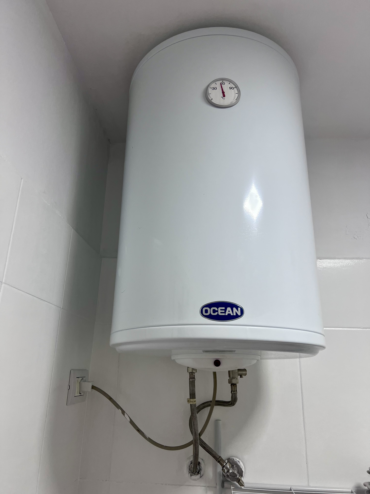
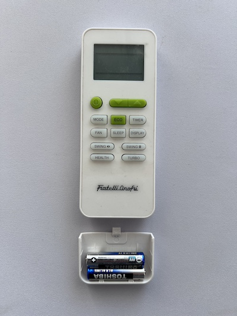

Informace pro hosty
🚖 Doprava z letiště
🛑 Taxi z letiště do apartmánu trvá cca 35 minut, cena přibližně 35 EUR. 🛑 Adresa: Rruga Deti Jon 3, Durres – Shkëmbi i Kavajës. 🛑 Po dohodě mohu zajistit odvoz.
📍 Poloha apartmánu
🏢 Příjezd k apartmánu
🛑 Budova má 7 pater. Apartmán je ve 4. patře (viz foto ). 🛑 Ke vstupu do výtahu je nutné přiložit čip z klíčů (viz foto 2) k výtahovému displeji. Stejně tak po vstupu do výtahu – přiložit čip na označené místo-pípnutí (viz foto 3), poté stisknout tlačítko č. 4.
   Vybavení bytu
🛑 Dispozice: Obývací pokoj s kuchyní, neprůchozí ložnice, koupelna s WC, dva balkony. 🛑 Vybavení: Klimatizace, pračka, lednice, varná konvice, základní nádobí. 🛑 Lůžkoviny a ručníky jsou uloženy v sedačce v obývacím pokoji. Při příjezdu i odjezdu nahrajte krátké video bytu (případně foto ) a stav vody/jističů. Jen pro moji potřebu a přehled, děkuji za pochopení. ata-i18n="navod_odjezd_text" class="multiline"> 🛑 Před vstupem do bytu si důkladně očistěte nohy od písku.
💧 Přívod vody
🛑 Hlavní ventil vody se nachází vlevo u hlavních vchodových dveří zvenčí,označen zelenou páskou(viz foto 4) ten úplně spodní - 4 z vrchu. 🛑 Pro spuštění vody otočte ventil do svislé polohy. Při odjezdu vodu opět uzavřete a pořiďte fotkustavu.
⚡ Elektrická energie
🛑 Hlavní jistič je uvnitř bytu hned za vchodovými (viz foto). 🛑 Po příjezdu jej zapněte, před odjezdem opět vypněte.
🔥♨️ Boiler – teplá voda
🛑 Boiler je v koupelně, nalevo za dveřmi (viz foto). 🛑 Zapněte pouze při potřebě (velice rychlé nahřátí). 🛑 Voda je velmi horká – pozor při manipulaci! 🛑 Boiler po použití vždy vypněte a při odjezdu zkontrolujte, že je přepínač vypnutý.

🧺🌀 Pračka
🛑 Pračka: doporučený program Daily Wash 30, prášek + aviváž se nachází pod skřínkou v koupelně.
🛑 Při odjezdu vypojte spotřebiče ze zásuvky ( pračka, lednice ) z konvice prosím vylejte vodu.
Klimatizace
Pro zapnutí klimatizace použijte dálkové ovládání, které se nachází na stole v obýváku. Při odjezdu, prosím vyndat baterie.
🌐 Wi-Fi
🛑 Název sítě: Alex
🛑 Heslo: 08051975 (napsáno také na krabičce za TV)
Prosím: NEMĚŇTE žádná nastavení.
📝 Před odjezdem
🛑 Všechny odpadky vyhoďte (kontejnery u hlavní silnice). 🛑 Vylijte vodu z rychlovarné konvice a žehličky. 🛑 NIC nenechávejte v lednici/mrazáku, obojí dvířka NECHTE otevřená. 🛑 Sundejte použité povlečení a pokud je čas a můžete tak případně vyperte. 🛑 Lednici a mrazák vyčistěte, všechny rolety stáhněte dolů, okna PONECHTE pootevřená. 🛑 "Jak najdeš, tak zanecháš" – prosím o poctivý úklid. Děkuji! 🛑 Kdyby jste objevili nějaký nedostatek či poruchu dejte mi prosím zpětnou vazbu at mohu odstranit.
💶 Měna & ceny
• 1 EUR = 96 LEK • 500 LEK = 125 Kč Hned na letišti můžete směnit peníze a zakoupit datovou SIM kartu. Doporučená cena je cca 1 500 LEK (~400 Kč) na měsíc. TIP: Ideální je mít druhý telefon nebo mobil s podporou dvou SIM karet/eSIM. Přes hotspot lze používat WhatsApp pro volání.